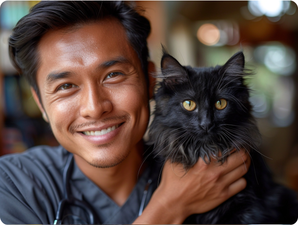

Joy Cat didirikan oleh kakak beradik, dr. Bima Sakti Gemilang dan dr. Andromeda Gemilang. Datang dari keluarga pecinta kucing dan sempat memelihara hampir dari 100 ekor kucing, kami memahami bahwa kucing bukan hanya sekadar hewan peliharaan, tetapi juga anggota keluarga yang berharga. Oleh karena itu, kami bertekad untuk menyediakan layanan yang mendukung kesehatan dan kebahagiaan bagi kucing dan para pemiliknya.
Dokter Bima Sakti Gemilang memperoleh gelar dokter hewan dari MicDokter Bima Sakti Gemilang memperoleh gelar dokter hewan dari Michigan State University. Di Joy Cat, ia saat ini bekerja sebagai salah satu dari dua dokter hewan fulltime. Dia sangat bersemangat dalam memberikan perawatan pencegahan yang tepat kepada semua pasien, dan giat memberikan edukasi terkait kesehatan kucing kepada para pemilik kucing. Dr. Bintang juga sangat mahir dan unggul dalam operasi jaringan lunak.
Dokter Andromeda Gemilang, adik dari dr. Bima adalah Praktisi Tingkat Lanjut dalam Kedokteran Kucing dan memegang Keanggotaan Kolese Ilmuwan Hewan Indonesia untuk Kedokteran Kucing.

Practice Manager
Ananta Shabrina
Head Nurse
Renata Lubis
House of Cats Manager
Ilham Dwimawan
Receptionist
Karin Aisyah
 0812-3456-78910
0812-3456-78910